Next: Part 2: Understanding Radio
Up: Part 1: Transistor Circuits
Previous: Transistor Testing
Design and build the basic transistor voltage amplifiers shown in the figure
below to achieve maximum voltage amplification and minimum distortion by
setting the DC operating point to be in the middle of the linear range of
the output characteristic plot. Use
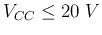.
Test the circuit by a sinusoidal signal of 50 mV peak-to-peak amplitude from
a signal generator (with output resistance
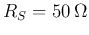) and an oscilloscope
(with input resistance
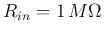) to monitor the input and output
signals both before and after the amplification and to observe the voltage
gain and waveform distortion.
Calculate the DC operating point based on your design,
and compare it with the actual circuit. Display both input and output signals
(sinusoidal) on the oscilloscope (use both input channels).
Specifically do the following:
- Determine the values of 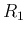,
 , 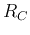, and 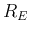 so that (a) the
DC operating point is in the middle of the load line for minimum distortion
and (b) the voltage gain is maximized.
, 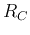, and 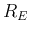 so that (a) the
DC operating point is in the middle of the load line for minimum distortion
and (b) the voltage gain is maximized.
- Measure the DC operating point (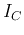 and 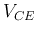) experimentally and
compare it with the predicted based on your design.
- Observe the voltage gain as a function of the by-pass capacitor in
parallel with , and the capacitors at both the input and output ports,
by trying different
 values.
values.
- Observe the voltage gain as a function of the signal frequency.
Generate a Bode plot of the magnitude of the voltage gain for the
frequency range of 10 Hz to 1 MHz. Find the maximum voltage gain 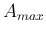
and the freqnecy 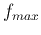 at which this maximum gain is achieved.
- Observe the polarity inversion and the signal distortion. Increase
the amplitude of the input sinusoid from 50 mV to 1 V and observe the
output in terms of the amount of distortion and clipping at both the
positive and negative peaks of the sinusoid.
What to submit:
A text document including pictures of the screenshots to discuss concisely
each of the items specified above.
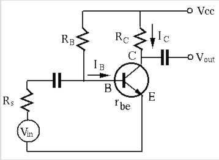.
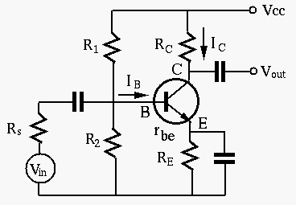.
Next: Part 2: Understanding Radio
Up: Part 1: Transistor Circuits
Previous: Transistor Testing
Ruye Wang
2015-07-26